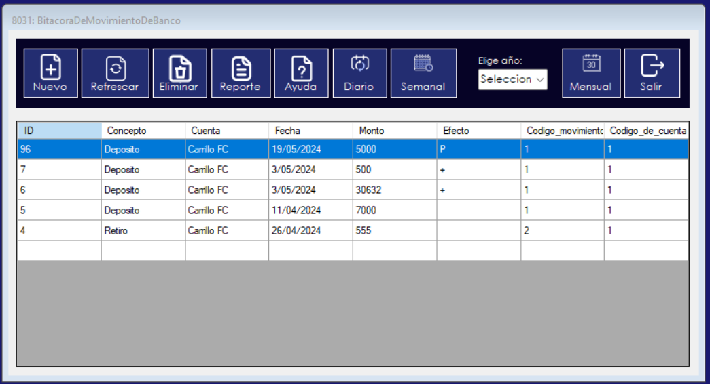
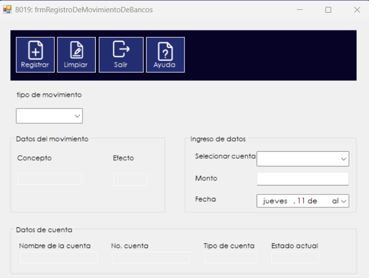
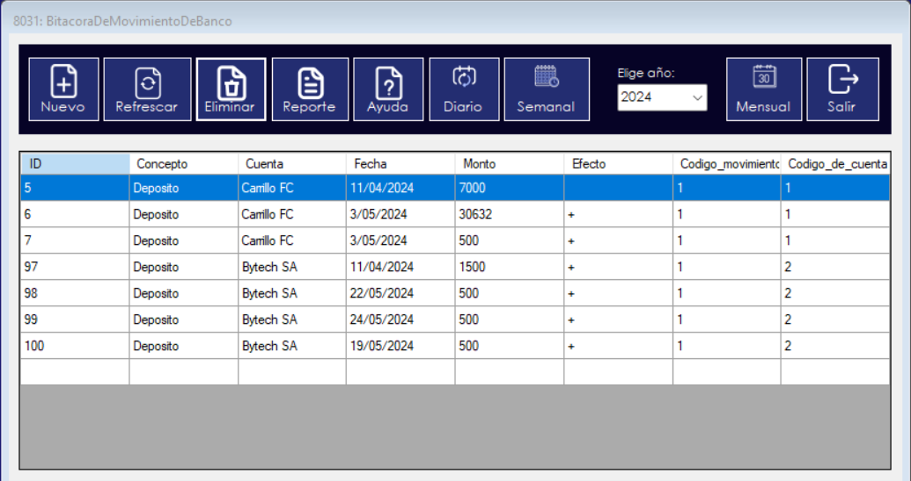
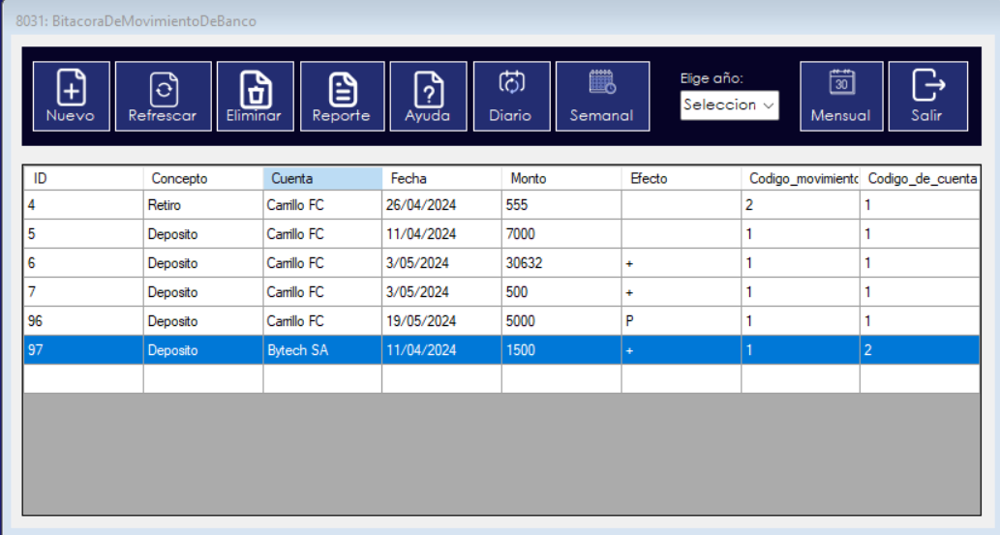
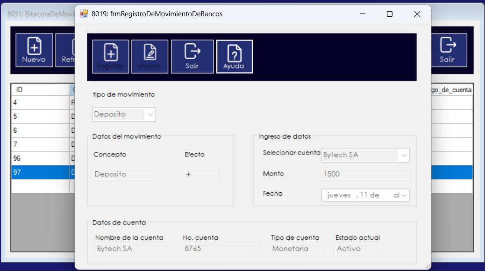
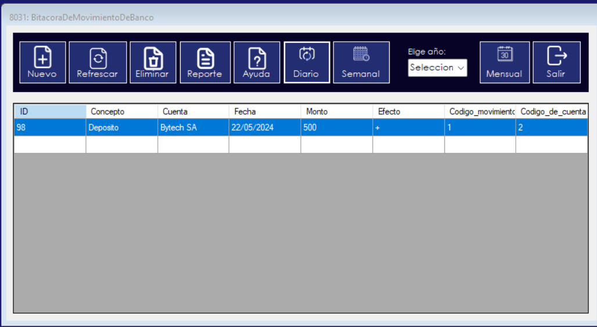
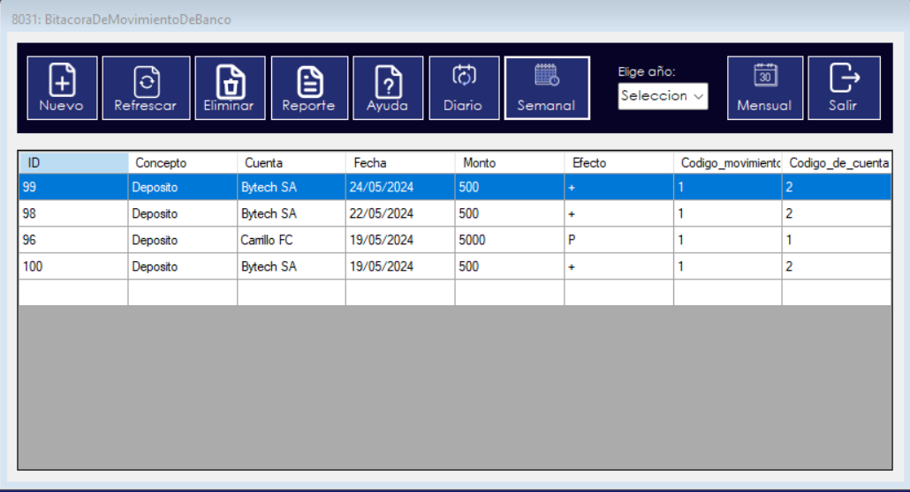
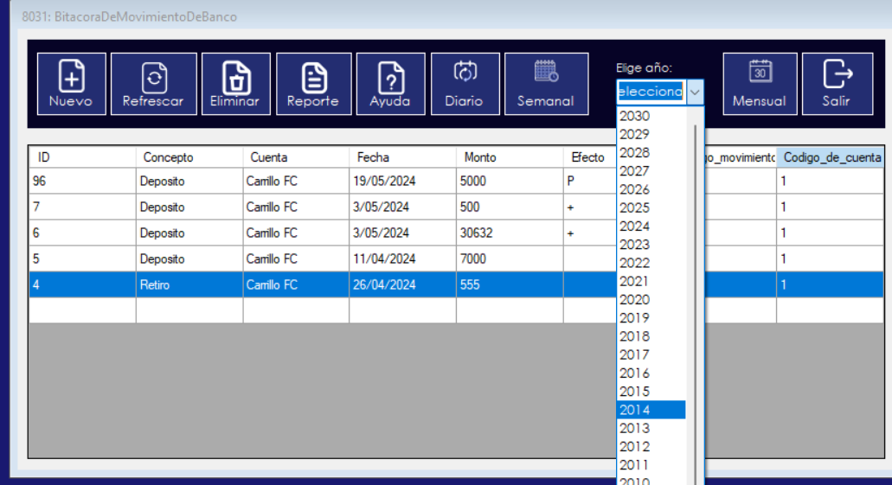

Al iniciar el proceso, se mostrará la bitácora de los movimientos realizados. Esta bitácora tiene como objetivo principal mostrar todos los movimientos que se han llevado a cabo tanto en la fecha actual como en fechas anteriores.
Para insertar un nuevo registro, debe hacer clic en el botón "Nuevo". Esto abrirá una ventana donde podrá ingresar los datos llenando los campos correspondientes. Deberá seleccionar el tipo de movimiento y la cuenta asociada (la búsqueda se realizará automáticamente). Solo es necesario llenar campos como el monto y la fecha. Además, hay otros botones para limpiar los campos, salir (cerrará la ventana) y ayuda (abrirá este documento).
Para eliminar un registro, seleccione la fila correspondiente en la bitácora y luego haga clic en el botón "Eliminar". Esto mostrará un mensaje preguntando si está seguro de eliminar el registro. Si confirma seleccionando "Sí", el registro será eliminado. En caso contrario, se mostrará un mensaje indicando que el registro no se eliminó.
Después de haber ingresado un nuevo registro, haga clic en el botón "Actualizar" para ver el último registro realizado.
La bitácora le ofrece la funcionalidad de ver registros anteriores. Para ello, simplemente debe hacer doble clic en la fila seleccionada. Esto abrirá nuevamente la ventana de registro, pero con los campos llenos con la información del registro seleccionado, aunque con los botones de registro y limpieza deshabilitados.
La bitácora le ofrece la funcionalidad de ver los registros que se han realizado en la fecha actual. Para ello, simplemente debe hacer clic en el boton "Diario". Esto mostrara solamente los registros realizados en la fecha actual.
La bitácora le ofrece la funcionalidad de ver los registros que se han realizado en la semana actual. Para ello, simplemente debe hacer clic en el boton "Semanal". Esto mostrara solamente los registros realizados en la semana actual.
La bitácora le ofrece la funcionalidad de ver los registros que se han realizado mensualmente. Para ello, debemos escoger el año de los registros y luego dar clic en el boton "Mensual". esto mostrara los registros realizados en los meses del año seleccionado.
